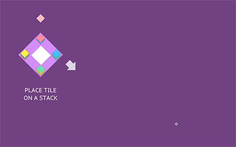
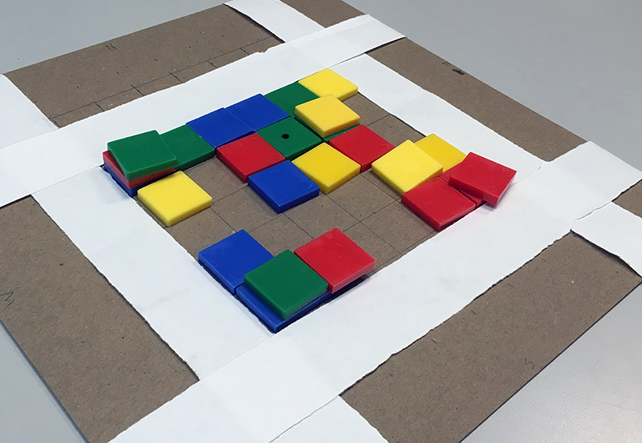

Currently being developed further solo, with different levels and level editor.
<Role: programmer, game designer, audio designer, artist>
Stacks On Stacks is a puzzle game currently in pre-alpha that has two modes: short goal-oriented board, and randomized score-oriented board.
In both modes, the player must assemble a pattern in the center of the board by stacking and unstacking tiles on the board.
The player places tiles on existing stacks of tiles on the board and spills a stack, spreading the tiles across the board in a line. After each round, one side of the board collapses - rendering it unusable - as its tiles spill onto the rest of the board for the player to deal with. With careful planning (or happy accidents), the player must solve the ever-changing puzzle that they face each turn.
In the goal-oriented board, the player must assemble the center pattern as directed by the objective in each level.
In the score-oriented board, the player must create as many 4 color combinations in the center as they can before the board completely collapses in on them!
GIFs:



Made with Unity3D; collaboration with Ben Costrell at NYU Game Center under Naomi Clark.
This game was originally a boardgame prototype. The mechanics were pretty much the same as the current digital version except for the differences in points accumulation. We thought the game was a good match for a digital version as handling the tile movements manually was more cumbersome than fun; if it was automated, players would be able to stay fully devoted to the actual puzzle.
I maintained the physicality of the board using various animations and sounds, while also tweaking the UI to make the navigation intuitive and point the player in the right direction to account for the lack of detailed rule explanations. It was initially difficult for players to understand exactly what phase the game was in, and what was interactable. This issue was addressed with the animations and sounds to increase responsivenes and the background color changes to denote different phases of the game.
The game changer was the introduction of the animated tutorial. Unstacking, or rather, spilling or unfurling, in the game was proven to be difficult for players to wrap their head around, even with the spilling animation in-game; visually showing it in the animated tutorial to supplement the discoveries the players would have in-game improved their learning experience.
Now, with level progression system, the player would be able to slowly learn each mechanic with each level instead of becoming overwhelmed with everything at once.